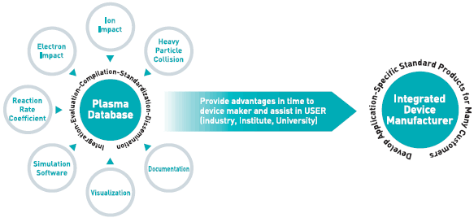

플라즈마 물성 데이터 참조표준 개발
- 플라즈마 물성 데이터 참조 표준 개발
- 데이터 평가 시스템 구축
- 충돌 실험 장비 구축
- 참조 표준 데이터 등록
- 분자 데이터 수집
- 웹 기반 정보 시스템 개발
R&D 프로그램 (국가핵융합연구소)
- 통합 진단 시스템 구축
- 원자 및 분자 충돌 현상 연구
- 진단 데이터 분석

국제 협력 네트워크 (Asia-Pacific Atomic Data Network : A-PAN)
- A network for dissemination of collisional data relevant to plasmas, discharges, materials & biosciences
국가핵융합연구소 플라즈마기술연구센터
전라북도 군산시 오식도동 814-2 | Tel : 063-440-4213 | Fax : 042-879-6983